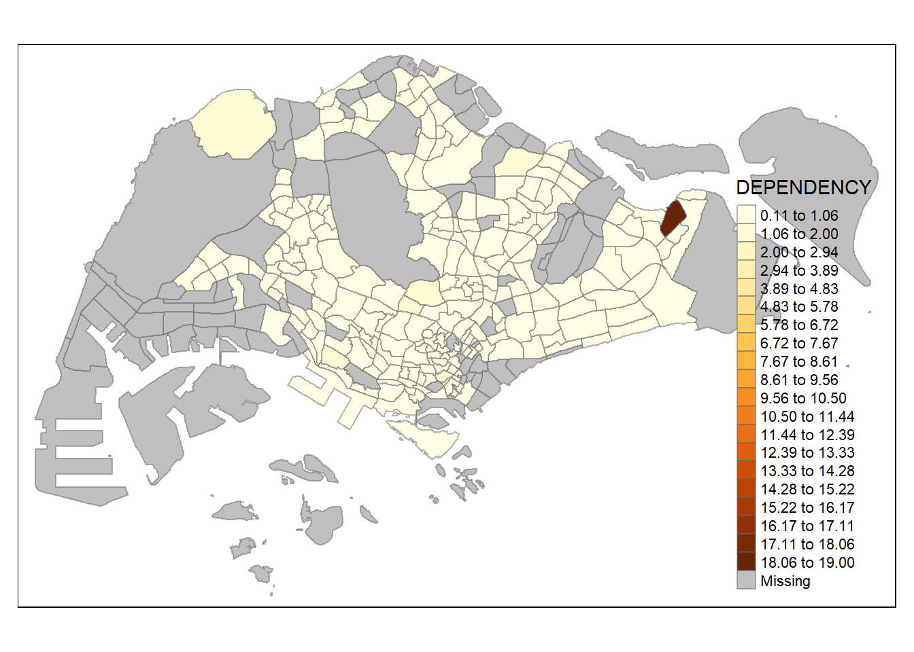

pacman::p_load(sf, tmap, tidyverse)1B: Choropleth Mapping with R
1. Overview
A choropleth map is a thematic map that uses shading or patterns to depict geographic areas in relation to a statistical variable, which serves as a summary of a specific geographic attribute within each area. This variable could represent various aspects, such as population or per-capita income. For instance, you can create a choropleth map to visually display the distribution of the elderly population in Singapore by utilizing the Master Plan 2014 Subzone Boundary as a reference. In the R programming language, the tmap package provides the tools needed to generate choropleth maps.
2. Getting Started
The following code chunk employs the p_load() function from the pacman package to verify whether the necessary packages have been installed on the computer. If they have been installed, the packages will be loaded.
sf: for the tasks of importing, managing, and processing geospatial data
tmap: package is used for creating thematic maps
The data sets used are:
Master Plan 2014 Subzone Boundary (Web) from data.gov.sg
Singapore Residents by Planning Area / Subzone, Age Group, Sex and Type of Dwelling, June 2011-2020 from Department of Statistics
3. Importing Data
3.1. Importing Geospatial Data into R
The following code chunk utilizes the st_read() function from the sf package to import the MP14_SUBZONE_WEB_PL shapefile into R, creating a simple feature data frame named mpsz.
mpsz <- st_read(dsn = "data/geospatial",
layer = "MP14_SUBZONE_WEB_PL")Reading layer `MP14_SUBZONE_WEB_PL' from data source
`D:\scwsu\ISSS624\Hands-on_Ex1\data\geospatial' using driver `ESRI Shapefile'
Simple feature collection with 323 features and 15 fields
Geometry type: MULTIPOLYGON
Dimension: XY
Bounding box: xmin: 2667.538 ymin: 15748.72 xmax: 56396.44 ymax: 50256.33
Projected CRS: SVY21mpszSimple feature collection with 323 features and 15 fields
Geometry type: MULTIPOLYGON
Dimension: XY
Bounding box: xmin: 2667.538 ymin: 15748.72 xmax: 56396.44 ymax: 50256.33
Projected CRS: SVY21
First 10 features:
OBJECTID SUBZONE_NO SUBZONE_N SUBZONE_C CA_IND PLN_AREA_N
1 1 1 MARINA SOUTH MSSZ01 Y MARINA SOUTH
2 2 1 PEARL'S HILL OTSZ01 Y OUTRAM
3 3 3 BOAT QUAY SRSZ03 Y SINGAPORE RIVER
4 4 8 HENDERSON HILL BMSZ08 N BUKIT MERAH
5 5 3 REDHILL BMSZ03 N BUKIT MERAH
6 6 7 ALEXANDRA HILL BMSZ07 N BUKIT MERAH
7 7 9 BUKIT HO SWEE BMSZ09 N BUKIT MERAH
8 8 2 CLARKE QUAY SRSZ02 Y SINGAPORE RIVER
9 9 13 PASIR PANJANG 1 QTSZ13 N QUEENSTOWN
10 10 7 QUEENSWAY QTSZ07 N QUEENSTOWN
PLN_AREA_C REGION_N REGION_C INC_CRC FMEL_UPD_D X_ADDR
1 MS CENTRAL REGION CR 5ED7EB253F99252E 2014-12-05 31595.84
2 OT CENTRAL REGION CR 8C7149B9EB32EEFC 2014-12-05 28679.06
3 SR CENTRAL REGION CR C35FEFF02B13E0E5 2014-12-05 29654.96
4 BM CENTRAL REGION CR 3775D82C5DDBEFBD 2014-12-05 26782.83
5 BM CENTRAL REGION CR 85D9ABEF0A40678F 2014-12-05 26201.96
6 BM CENTRAL REGION CR 9D286521EF5E3B59 2014-12-05 25358.82
7 BM CENTRAL REGION CR 7839A8577144EFE2 2014-12-05 27680.06
8 SR CENTRAL REGION CR 48661DC0FBA09F7A 2014-12-05 29253.21
9 QT CENTRAL REGION CR 1F721290C421BFAB 2014-12-05 22077.34
10 QT CENTRAL REGION CR 3580D2AFFBEE914C 2014-12-05 24168.31
Y_ADDR SHAPE_Leng SHAPE_Area geometry
1 29220.19 5267.381 1630379.3 MULTIPOLYGON (((31495.56 30...
2 29782.05 3506.107 559816.2 MULTIPOLYGON (((29092.28 30...
3 29974.66 1740.926 160807.5 MULTIPOLYGON (((29932.33 29...
4 29933.77 3313.625 595428.9 MULTIPOLYGON (((27131.28 30...
5 30005.70 2825.594 387429.4 MULTIPOLYGON (((26451.03 30...
6 29991.38 4428.913 1030378.8 MULTIPOLYGON (((25899.7 297...
7 30230.86 3275.312 551732.0 MULTIPOLYGON (((27746.95 30...
8 30222.86 2208.619 290184.7 MULTIPOLYGON (((29351.26 29...
9 29893.78 6571.323 1084792.3 MULTIPOLYGON (((20996.49 30...
10 30104.18 3454.239 631644.3 MULTIPOLYGON (((24472.11 29...
Note
Referring to the mpsz simple feature data frame will result in displaying only the initial 10 rows. This simplifies working with extensive datasets and prevents R from trying to show every row within a data frame.
3.2. Importing Attribute Data into R
The following code chunk employs the read_csv() function from the readr package to load the respopagesextod2011to2020.csv file into R and store it as a R dataframe named popdata.
popdata <- read_csv("data/aspatial/respopagesextod2011to2020.csv")3.3. Preparing the Data
Before creating a thematic map, the popdata is transformed into a data table with values for the year 2020. This data table includes the following variables:
YOUNG: Representing age groups from 0 to 4 up to age group 20 to 24.ECONOMY ACTIVE: Covering age groups from 25-29 to age group 60-64.AGED: Encompassing age group 65 and above.TOTAL: Combining all age groups.DEPENDENCY: Calculating the ratio between the young and aged populations against the economy-active group.
To perform these data wrangling and transformation tasks, various functions are utilized, including pivot_wider() from the tidyr package, as well as mutate(), filter(), group_by(), and select() from the dplyr package.
popdata2020 <- popdata %>%
filter(Time == 2020) %>%
group_by(PA, SZ, AG) %>%
summarise(`POP` = sum(`Pop`)) %>%
ungroup()%>%
pivot_wider(names_from=AG, values_from=POP) %>%
mutate(YOUNG = rowSums(.[3:6])+rowSums(.[12])) %>%
mutate(`ECONOMY ACTIVE` = rowSums(.[7:11])+rowSums(.[13:15]))%>%
mutate(`AGED`=rowSums(.[16:21])) %>%
mutate(`TOTAL`=rowSums(.[3:21])) %>%
mutate(`DEPENDENCY` = (`YOUNG` + `AGED`)/`ECONOMY ACTIVE`) %>%
select(`PA`, `SZ`, `YOUNG`, `ECONOMY ACTIVE`, `AGED`, `TOTAL`, `DEPENDENCY`)3.4. Joining Attribute and Geospatial Data
Before conducting the georelational join, an additional step is necessary to convert the values in the PA and SZ fields to uppercase. This adjustment is needed because the PA and SZ fields contain a mix of upper and lowercase characters, whereas the SUBZONE_N and PLN_AREA_N columns are entirely in uppercase.
popdata2020 <- popdata2020 %>%
mutate(across(where(is.character), toupper)) %>%
filter(`ECONOMY ACTIVE` > 0)Subsequently, the left_join() function from the dplyr package is employed to merge the geographical data and attribute table using the Planning Subzone name, specifically “SUBZONE_N” and “SZ,” as the shared identifier.
mpsz_pop2020 <- left_join(mpsz, popdata2020,
by = c("SUBZONE_N" = "SZ"))write_rds(mpsz_pop2020, "data/rds/mpszpop2020.rds")4. Choropleth Mapping Geospatial Data Using tmap
There are two methods for creating thematic maps using the tmap package:
Swiftly generating a thematic map with basic settings using
qtm().Crafting a highly customizable thematic map by utilizing tmap elements.
4.1. Plotting a choropleth map quickly by using qtm()
qtm() is the most straightforward and efficient way to create a choropleth map with tmap. It offers a concise approach and provides a suitable default visualization for many scenarios. The following code snippet will generate a standard choropleth map as depicted below.
Note
When using tmap_mode() with the plot option, it generates a static map. To enable interactive mode, you should utilize the view option.
Note
The fill argument is employed to associate and represent the attribute of interest on the map.
tmap_mode("plot")
qtm(mpsz_pop2020,
fill = "DEPENDENCY")
Note
Nonetheless, when utilizing qtm(), it can be more challenging to precisely control the aesthetics of individual layers. To create a top-notch cartographic choropleth map, it’s advisable to employ tmap drawing elements.
4.2. Drawing Base Map using tmap elements
The fundamental component of tmap consists of tm_shape() followed by one or more layer elements, such as tm_fill() and tm_polygons(). In the provided code snippet, tm_shape() is employed to specify the input data (i.e., mpsz_pop2020), and tm_polygons() is used to render the Planning Subzone polygons.
To create a choropleth map illustrating the spatial distribution of a specific variable based on Planning Subzones, you can assign the target variable, such as Dependency to tm_polygons().
Note
The default method for interval binning when creating a choropleth map is pretty. tmap offers a total of ten data classification methods, which include: fixed, sd, equal, pretty (the default), quantile, kmeans, hclust, bclust, fisher, and jenks.
Note
Missing values will be shaded in grey by default.
tm_shape(mpsz_pop2020) +
tm_polygons("DEPENDENCY")
4.3. Drawing a choropleth map using tm_fill() and tm_border()
tm_polygons() is a combined function that includes both tm_fill() and tm_borders(). tm_fill() is responsible for applying the default color scheme to shade the polygons, while tm_borders() adds the shapefile’s borders to the choropleth map.
In the provided code snippet, a choropleth map is created using tm_fill() alone, with the Planning Subzones being shaded based on their corresponding DEPENDENCY values.
tm_shape(mpsz_pop2020)+
tm_fill("DEPENDENCY")
tm_borders() introduces subtle light gray boundaries along the edges of the Planning Subzones.
Note
The alpha argument is employed to specify a transparency level, ranging from 0 (completely transparent) to 1 (fully opaque). By default, the alpha value of the color (col) is utilized, which is typically set to 1. Additionally, other customizable arguments include col for border color, lwd for border line width (default is 1), and lty for border line type (default is ‘solid’).
tm_shape(mpsz_pop2020)+
tm_fill("DEPENDENCY") +
tm_borders(lwd = 0.1, alpha = 1)
4.4. Data Classification Methods of tmap
Choropleth maps can be categorized into two types: classified and unclassified:
Classed Choropleth Maps: The purpose of classification is to take a large dataset and group its observations into distinct data ranges or classes. To define a data classification method, you can utilize the
styleargument withintm_fill()ortm_polygons().Unclassed Choropleth Maps: Similar to classified choropleth maps, unclassified maps represent geographic data, but they don’t involve an averaged statistic for each specific color.
There are numerous methods for selecting classes, and they can be based on the distribution’s nature (e.g., quantile, equal interval, natural breaks) or arbitrary criteria (e.g., fixed round numbers, census housing categories).
tm_shape(mpsz_pop2020)+
tm_fill("DEPENDENCY",
n = 5,
style = "equal") +
tm_borders(alpha = 0.5)
tm_shape(mpsz_pop2020)+
tm_fill("DEPENDENCY",
n = 5,
style = "sd") +
tm_borders(alpha = 0.5)
tm_shape(mpsz_pop2020)+
tm_fill("DEPENDENCY",
n = 5,
style = "quantile") +
tm_borders(alpha = 0.5)
tm_shape(mpsz_pop2020)+
tm_fill("DEPENDENCY",
n = 5,
style = "jenks") +
tm_borders(alpha = 0.5)
tm_shape(mpsz_pop2020)+
tm_fill("DEPENDENCY",
n = 5,
style = "kmeans") +
tm_borders(alpha = 0.5)
tm_shape(mpsz_pop2020)+
tm_fill("DEPENDENCY",
n = 5,
style = "fisher") +
tm_borders(alpha = 0.5)
Note
The fisher style forms clusters with maximized similarity within them.
Note
In this instance, it’s worth noting that the equal data classification method results in a noticeably less balanced distribution compared to the quantile data classification method. When choosing a data classification method, it’s crucial to take into account both the distribution of the variable and the goals of the analysis as these factors play a significant role in the decision-making process.
tm_shape(mpsz_pop2020)+
tm_fill("DEPENDENCY",
n = 2,
style = "equal") +
tm_borders(alpha = 0.5)tm_shape(mpsz_pop2020)+
tm_fill("DEPENDENCY",
n = 6,
style = "equal") +
tm_borders(alpha = 0.5)
tm_shape(mpsz_pop2020)+
tm_fill("DEPENDENCY",
n = 10,
style = "equal") +
tm_borders(alpha = 0.5)
tm_shape(mpsz_pop2020)+
tm_fill("DEPENDENCY",
n = 20,
style = "equal") +
tm_borders(alpha = 0.5)
tm_shape(mpsz_pop2020)+
tm_fill("DEPENDENCY",
n = 2,
style = "quantile") +
tm_borders(alpha = 0.5)tm_shape(mpsz_pop2020)+
tm_fill("DEPENDENCY",
n = 6,
style = "quantile") +
tm_borders(alpha = 0.5)
tm_shape(mpsz_pop2020)+
tm_fill("DEPENDENCY",
n = 10,
style = "quantile") +
tm_borders(alpha = 0.5)tm_shape(mpsz_pop2020)+
tm_fill("DEPENDENCY",
n = 20,
style = "quantile") +
tm_borders(alpha = 0.5)
Note
Expanding the number of classes may not necessarily enhance the analysis. In the case of the equal data classification method, introducing extra classes resulted in more colors in the legend without a substantial improvement in the map’s meaning. Similarly, with the quantile data classification method, increasing the number of classes proved beneficial up to approximately n=10, but beyond that point, the added colors did not contribute significantly to the map’s value.
4.5. Plotting Choropleth Map with Custom Breaks (Fixed Data Classification)
In the case of all predefined styles, the category breaks are internally calculated. However, if you wish to customize these defaults, you can explicitly specify the breakpoints using the “breaks” argument within the tm_fill() function.
Note
In tmap, the breaks parameter encompasses both a minimum and a maximum value. Therefore, when dealing with n categories, you need to provide n+1 elements within the “breaks” option, and they should be arranged in ascending order.
Descriptive statistics of the variable can be used to provide guidance when establishing the breakpoints.
summary(mpsz_pop2020$DEPENDENCY) Min. 1st Qu. Median Mean 3rd Qu. Max. NA's
0.1111 0.7147 0.7866 0.8585 0.8763 19.0000 92 Referring to the findings presented earlier, we established breakpoints at 0.60, 0.65, 0.70, 0.75, and 0.80. Additionally, we included minimum and maximum values, which were set at 0 and 100. Consequently, the breaks vector was defined as c(0, 0.60, 0.65, 0.70, 0.75, 0.80, 1.00).
tm_shape(mpsz_pop2020)+
tm_fill("DEPENDENCY",
breaks = c(0, 0.60, 0.65, 0.70, 0.75, 0.80, 1.00)) +
tm_borders(alpha = 0.5)4.6. Colour Scheme
tmap provides the flexibility to use color ramps that are either custom-defined by the user or selected from a set of pre-established color ramps available in the RColorBrewer package. To modify the colors, you can assign your desired color palette to the palette argument within the tm_fill() function, as demonstrated in the following code snippet.
tm_shape(mpsz_pop2020)+
tm_fill("DEPENDENCY",
n = 6,
style = "jenks",
palette = "Blues") +
tm_borders(alpha = 0.5)Add a “-” prefix to reverse the colour shading.
tm_shape(mpsz_pop2020)+
tm_fill("DEPENDENCY",
n = 6,
style = "jenks",
palette = "-Blues") +
tm_borders(alpha = 0.5)4.7. Map Layouts
Map layout encompasses the integration of various map components into a unified whole. These map elements encompass a range of elements, such as the items to be mapped, the title, the scale bar, the compass, margins, and aspect ratios. The color configurations and data classification methods discussed in the preceding section, including the palette and breakpoints, are instrumental in influencing the map’s visual appearance. In tmap, there are several options available for adjusting the position, format, and appearance of the legend, allowing for further customization of the map’s presentation.
tm_shape(mpsz_pop2020)+
tm_fill("DEPENDENCY",
style = "jenks",
palette = "Blues",
legend.hist = TRUE,
legend.is.portrait = TRUE,
legend.hist.z = 0.1) +
tm_layout(main.title = "Distribution of Dependency Ratio by planning subzone \n(Jenks classification)",
main.title.position = "center",
main.title.size = 1,
legend.height = 0.45,
legend.width = 0.35,
legend.outside = FALSE,
legend.position = c("right", "bottom"),
frame = FALSE) +
tm_borders(alpha = 0.5)
tmap offers a broad range of layout customization options that can be accessed via the tmap_style() function. The following code snippet employs the “classic” style as an example.
Note
Additional style options include: “white,” “gray,” “natural,” “cobalt,” “col_blind,” “albatross,” “beaver,” “bw,” and “watercolor.”
Note
Use tmap_style("white") to reset to the default style.
tm_shape(mpsz_pop2020)+
tm_fill("DEPENDENCY",
style = "quantile",
palette = "-Greens") +
tm_borders(alpha = 0.5) +
tmap_style("classic")
In addition to map styling, tmap also offers the ability to incorporate other map elements, such as a compass using tm_compass(), a scale bar using tm_scale_bar(), and grid lines using tm_grid().
tm_shape(mpsz_pop2020)+
tm_fill("DEPENDENCY",
style = "quantile",
palette = "Blues",
title = "No. of persons") +
tm_layout(main.title = "Distribution of Dependency Ratio \nby planning subzone",
main.title.position = "center",
main.title.size = 1.2,
legend.height = 0.45,
legend.width = 0.35,
frame = TRUE) +
tm_borders(alpha = 0.5) +
tm_compass(type="8star", size = 2) +
tm_scale_bar(width = 0.15) +
tm_grid(lwd = 0.1, alpha = 0.2) +
tm_credits("Source: Planning Subzone boundary from Urban Redevelopment Authorithy (URA)
and Population data from Department of Statistics DOS",
position = c("left", "bottom"))4.8. Small Multiple Choropleth Maps (Facet Choropleth Maps)
Small multiple maps, also known as facet maps, consist of multiple maps arranged either side-by-side or vertically stacked. They offer a way to visualize how spatial relationships change in relation to another variable, such as time.
In tmap, you can create small multiple maps in three ways:
By assigning multiple values to at least one of the aesthetic arguments.
By specifying a group-by variable in
tm_facets().By generating multiple standalone maps and arranging them using
tmap_arrange().
Small multiple choropleth maps can be created by defining ncols in tm_fill().
tm_shape(mpsz_pop2020)+
tm_fill(c("YOUNG", "AGED"),
style = "equal",
palette = "Blues") +
tm_layout(legend.position = c("right", "bottom")) +
tm_borders(alpha = 0.5) +
tmap_style("white")
Small multiple choropleth maps can be created by using tm_facets().
tm_shape(mpsz_pop2020) +
tm_fill("DEPENDENCY",
style = "quantile",
palette = "Blues",
thres.poly = 0) +
tm_facets(by="REGION_N",
free.coords=TRUE,
drop.shapes=TRUE) +
tm_layout(legend.show = FALSE,
title.position = c("center", "center"),
title.size = 20) +
tm_borders(alpha = 0.5)
Small multiple choropleth maps can be created by creating multiple stand-alone maps with tmap_arrange().
youngmap <- tm_shape(mpsz_pop2020)+
tm_polygons("YOUNG",
style = "quantile",
palette = "Blues")
agedmap <- tm_shape(mpsz_pop2020)+
tm_polygons("AGED",
style = "quantile",
palette = "Blues")
tmap_arrange(youngmap, agedmap, asp=1, ncol=2)
4.9. Mapping Spatial Object Meeting a Selection Criterion
Instead of generating small multiple choropleth maps, an alternative approach is to utilize a selection function to map spatial objects that meet specific selection criteria.
tm_shape(mpsz_pop2020[mpsz_pop2020$REGION_N=="CENTRAL REGION", ])+
tm_fill("DEPENDENCY",
style = "quantile",
palette = "Blues",
legend.hist = TRUE,
legend.is.portrait = TRUE,
legend.hist.z = 0.1) +
tm_layout(legend.outside = TRUE,
legend.height = 0.45,
legend.width = 5.0,
legend.position = c("right", "bottom"),
frame = FALSE) +
tm_borders(alpha = 0.5)